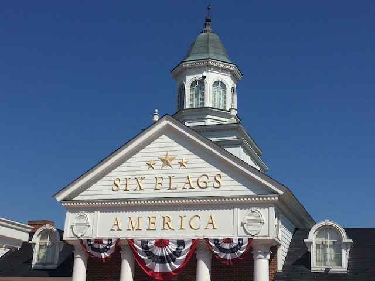
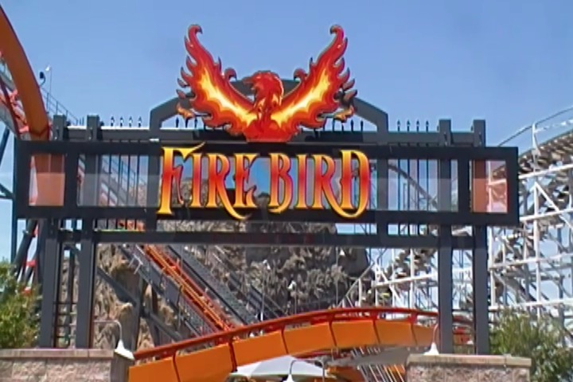
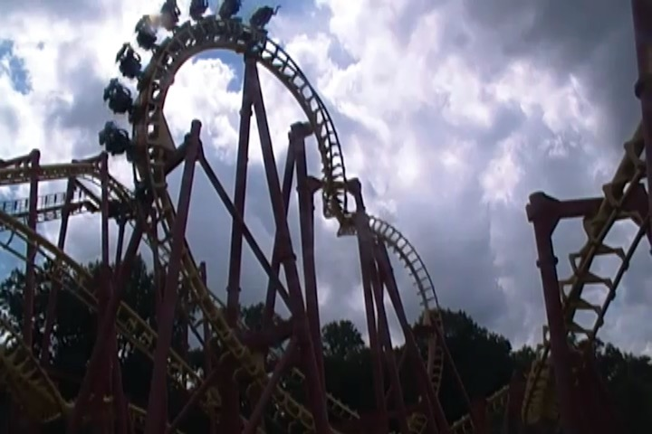
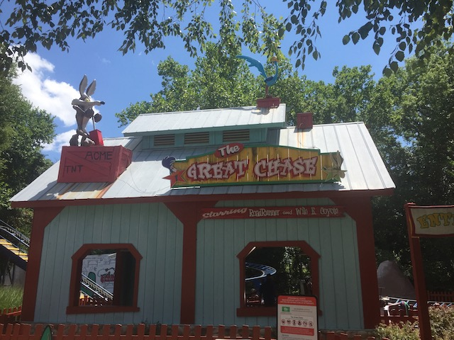
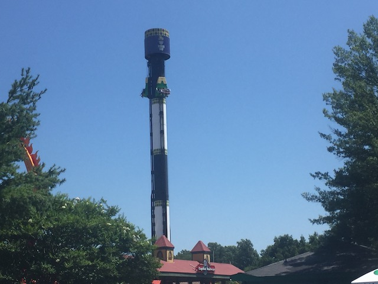
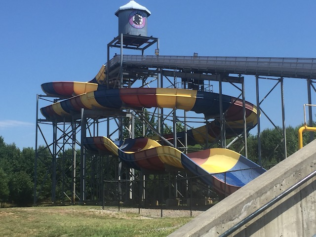
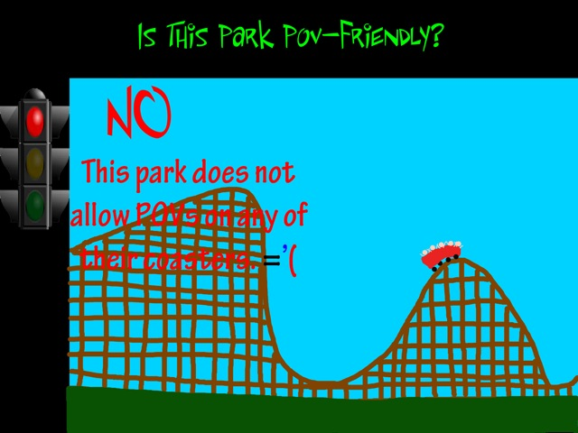

| |

Six Flags America Review

Six Flags America was a Six Flags park that.....did not have a good reputation to say the least. Yeah, not everyone hated it (incuding myself), but this park tended to get a reputation as one of the worst Six Flags parks, and a park on par with places like La Ronde and Mt. Olympus. And you know what I think about those parks. But at the same time, Fuji-Q Highlands also tends to get similar ratings, and I had a blast at that park! Almost all of the horror stories about that park were exxagerated and I had a blast. And I'm happy to say that that's essentially the same thing at Six Flags America. I know people complain about operations, and.....while the operations at Six Flags America weren't great, they were OK. The park is so dead that you still aren't gonna be waiting that long to ride. But even so, the operations still aren't that bad when it comes to shooting video (shooting footage at parks with bad operations is a total pain in the ass). Combine OK operations with a park that appears to almost always be dead, and you have a very fun day. Oh, and their coaster collection was a lot of fun as well. Yeah, they never added anything new. But while I never complained, I did wonder how this park managed to stay open, considering how dead it is, and how the park REALLY reminded me of Geauga Lake, both in how I was having fun, as well as the sense of park stability I felt while visiting. And Geauga Lake closed MONTHS after I visited. Six Flags America lasted much longer, but yeah. It eventually, also met the same fate. Take a look and see all that the park had to offer.
Rollercoasters
There is a link to a review of all the Rollercoasters that once resided at Six Flags America.
Top Coasters
Jokers Jinx Review

Very Fun Coasters
Batwing Review

Superman: Ride of Steel Review

Decent Coasters
Firebird Review

Roar Review

Wild One Review

Meh Coasters
Professor Screamore's Skywinder Review

Family Coasters
Raging Cajun Review

Kiddy Coasters
Great Chase Review

Flat Rides
Here are the reviews of all the Flat Rides at were at Six Flags America. Now the first thing worth mentioning was be the parks drop tower, Voodoo Drop. Now let's be blunt about this. This was NOT a good drop tower. It's VERY small, and I know that I joke that it's practically of cliff jumping size (I know from the top of the tower to the ground, absolutely not since....140 ft is too high to safely cliff jump. But if you exclude the part of the tower that's braked and solely doing the pure freefall portion, that might be 70 ft). But yeah. Voodoo Drop may have been very small and towards the bottom of the drop tower barrel thanks to its small size (size DEFINATELY matters when it comes to drop towers). But I still had a lot of fun on it (though keeping it real. This ride isn't missed due to so many bigger and better drop towers). The 2nd notable flat ride they had would be Wonder Woman: Lasso of Truth. Now this was the parks Starflyer. And....it was fun. Yeah. It wasn't one of those monterous Star Flyers, but at least it wasn't one of the puny ones either (unlike their drop tower). Fun ride, though I have to admit. The view from this was pretty damn dull. Well, at least there were some great shots of Superman & Batwing from up here. That's a plus. Moving on, they also had Zydeco Zinger, which is a Falling Star. Sadly, these things are becoming rarer as time goes on. which is a shame since....they're actually fun rides. The closure of Six Flags America only fuels this sad trend since I'm pretty sure this ride wasn't saved. We also checked out their teacups, the French Quarter Flyers, Cyclone (the parks scrambler), and Flying Carousel (the parks chairswings). They were all fun, but pretty standard and generic. And those are all the flat rides I rode at Six Flags America. They also had a round up, a breakdance, a pirate ship, bumper cars, and a carousel.

Small, but fun.
Dark Rides
Six Flags America didn't have any dark rides. Not too surprising considering how this was the red-headed step child of the Six Flags family that rarely got any love and was quickly selected to die upon the merger and creation of Cedar Flags.
Water Rides
All right. Six Flags America may not have had the craziest water ride collection, but there are a couple things worth noting here. Mainly, Penguin's Blizzard River. This was another one of those Spinning Raft Rides, and....*sigh* God damn it. I think it's time to just officially call this entire type of ride overhyped and overrated. It was dull at Parc Asterix, it was dull at Hansa Park, and it was dull here. I don't think its one of the way its run. I think those Spinning Raft rides are just dull rides. Maybe with fat people, it might become fun. But...I think I officially give up on these types of rides. Ugh. They also had a Shoot the Chutes, and a Rapids Ride.

These rides continue to dissapoint me. Please start spinning.
Water Park
Yep, Six Flags America did indeed have a water park, and no. I did not visit. Eh. It looks like a fun park with some fun slides. And due to its closure, I'll never get to explore it. Oh well.
Dining
I did not eat at Six Flags America.
Theming and Other Attractions
Here are the reviews of all the other stuff at Six Flags America. Well, when it comes to theming, there's really was not a ton at Six Flags America. I know that may not sound like much considering....this was a Six Flags Park after all. But even by Six Flags standards, there was no theming at this place. The only part of the park where they really tried would be Gotham City. And....if your Gotham City makes Gotham City at Six Flags Magic Mountain look well themed, then you have to admit that your theming really is a big fat f*cking failure. Oh, and I guess the Mardi Gras New Orleans area would be theming as well. But that's not much. As for other things to do....Six Flags America seemed to be really be lacking. I know Six Flags parks tend to be lacking in general when it comes to the shows and other attractions area. But Six Flags America in particular was lacking in this area. But let's keep it real. You came here for roller coasters, so I don't think this is a big loss for you.
In Conclusion
Six Flags America was a fun amusement park. I know if you just looked at the coaster collection, this would be an obvious fact. But Six Flags America had been demonized by so many coaster enthusiasts, and that just sadly isn't fair. No, this park is not in the same leagues as La Ronde and Mt. Olympus. First off, the park is so dead that the operations really wouldn't matter that much. But even from a photography stand point, the operations are all fine. It's not like the coasters only ever operate every 5 minutes or anything horrendous like that. Sure, the operations may not have been the best, but considering how dead this park was, they were fine. Honestly, the park more than anything, reminded me of Geauga Lake back when I got to visit during its last few months of life. Not a bad park, but you wondered how the hell the park is still in business!? This is a park that just SCREAMED "Gonna go out of business". And yeah. That's exactly what happened. And sadly, unlike the closure of Geauga Lake, MOST of the coasters at Six Flags America were killed. None of the high quality coasters, Superman, Jokers Jinx, Batwing, NONE of those were saved. All of them saved. Quite the contrast to Geauga Lake, where all the major coasters were saved (Dominator still lives on at Kings Dominion), and the only things that truly died there were the woodies, and the crappy Arrow Double Loop (though while X-Flight was saved and relocated to Kings Island, it eventually died there years later). Yeah. This isn't a huge surprise. But it's still a big bummer. I would've recommend checking out Six Flags America while on some East Coast Trip before hitting up Kings Dominion and Busch Gardens Williamsberg.
Enthusiast FAQs.
*Are there kiddy coaster restrictions? - No. You could ride Great Chase.

Tips
*Get to Batwing early. That ride is finicky and could close later in the day (may also possibly open later.)
*Don't be afraid to get any rerides since the park is so dead.
*Have Fun!!!!
Location
Upper Marlboro, Maryland, USA
Theme Park Category:
Amusement Park
Last Day Visited
July 22, 2019
Video
I unfortunately did not shoot enough video to make a Six Flags America video. And since it's dead, there will NEVER be one.
Complete Update List
2019
Mid-Atlantic Trip 2019
Here's a link to an archieve of the parks website.
Home
|